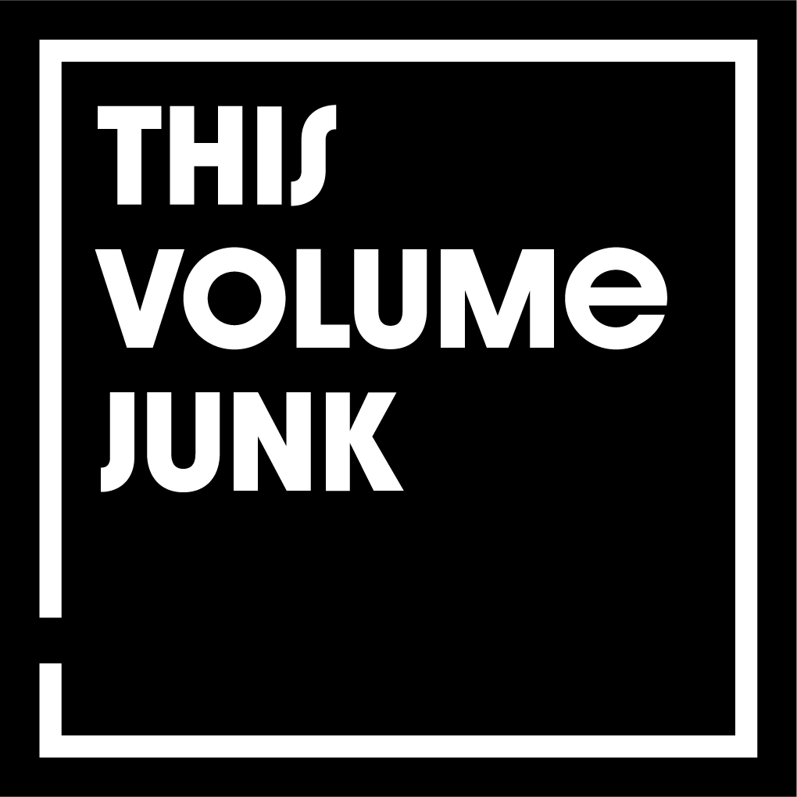

Review
THIS VOLUME JUNK - Unbound
THIS VOLUME JUNK - Unbound

Manchmal reicht eine freundliche Mail, damit ein Album auf dem Hörstapel landet. So war es bei This Volume Junk aus L'Aquila in Italien.
Musikalisch fühlt sich das für mich an, als hätten Bauhaus und AFI beschlossen, gemeinsam eine ziemlich düstere Kellerprobe abzuhalten. Der Post-Punk schwingt ständig mit, bekommt aber immer wieder eine ordentliche Portion dreckigen Punkrock vor den Latz geknallt. Eine Mischung, die erstaunlich gut funktioniert.
Inhaltlich nehmen die Italiener kein Blatt vor den Mund. Gesellschaftskritik, Entfremdung, Identität und der Blick auf eine hyperkapitalistische Welt ziehen sich durch die Songs. Das ist keine Musik für nebenbei und erst recht nichts zum Kuscheln.
Unbound ist schmutzig, unbequem und an vielen Stellen genau so sperrig, wie es sein will. Wer auf Hochglanzproduktionen und eingängige Mitgröl-Refrains hofft, dürfte hier schnell aussteigen. Wer dagegen düsteren Post-Punk mit ordentlich Dreck unter den Fingernägeln mag, sollte This Volume Junk ruhig mal eine Chance geben.
Sometimes a friendly email is enough to push an album onto the listening pile. That's what happened with This Volume Junk from L'Aquila, Italy.
Musically, this feels to me like Bauhaus and AFI decided to hold a fairly gloomy basement rehearsal together. The post-punk pulse is always there, but it keeps getting smacked in the face by a dirty chunk of punk rock. A strange mix, and yes, it lands better than it probably should.
Lyrically, the Italians do not exactly tiptoe around the room. Social criticism, alienation, identity, and the view of a hyper-capitalist world run through the songs. This is not background music, and it is definitely not something to cuddle up with.
Unbound is grimy, uncomfortable, and in plenty of places exactly as stubborn as it wants to be. If you are looking for polished production and easy shout-along choruses, you may bail out pretty quickly. If you like dark post-punk with a good amount of dirt under its fingernails, This Volume Junk deserve a chance.
Unbound auf Bandcamp
THIS VOLUME JUNK auf Instagram
THIS VOLUME JUNK auf YouTube